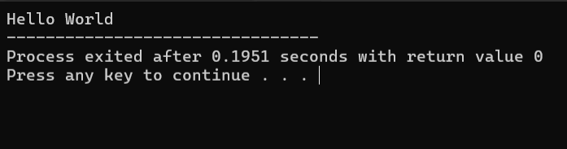

C++ Basics
Contents
User Input
Data Types
If Else
Loops
Basic Programming Structure💻
Before jumping into basics. Let us have a brief introduction about the standard blueprint of the language.
C++ Code 💻
#include<iostream>
using namespace std;
main
{
cout<<"Hello World";
return 0;
}

Terminal Output
- #include<iostream> : A preprocessor directive that imports code for handling input and output operations.
- int main() : The mandatory function from where the execution starts.
- cout : The standard output stream object.
- return 0 : Terminated execution and reports success back to the Operating System.
Navigating through the chapters 📍
To browse through the chapters, click the drop down button "Contents" at the very beginning of the page , and you will be all set to learn
Previous Page
Start chapter